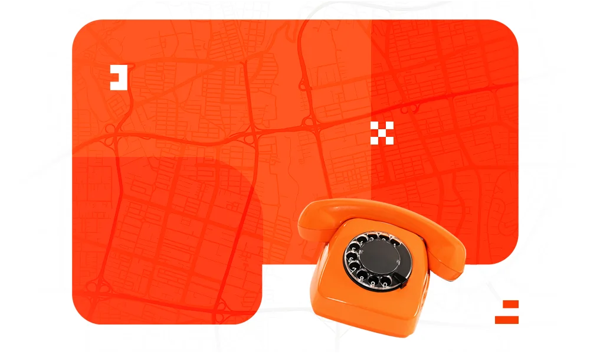

سرویس های تپسی
تپسی کلاسیک
سرویس تپسی تلفنی یا ۱۶۳۰، این امکان را به شما میدهد که بدون نیاز به اینترنت و اپلیکیشن، درخواست خودرو بدهید. این سرویس تاکسی تلفنی مناسب زمانی است که به هر دلیلی دسترسی به اینترنت یا اپلیکیشن ندارید. همچنین سرویس تلفنی تپسی، راه حلی مناسب برای افرادی است که کار کردن با اپلیکیشنهای موبایلی برایشان راحت نیست.

موتوپیک
با استفاده از سرویس موتوپیک، بستهها و مرسولاتتان با پیک موتور به مقصد ارسال میشوند. این سرویس مناسب زمانی است که میخواهید مرسوله سریعتر به مقصد برسد. در این سرویس، شما میتوانید مسیر رسیدن مرسولهتان به مقصد را به صورت لحظهای روی نقشه دنبال کنید.

اتوپیک
اتوپیک سرویسی برای ارسال بستههای شما با خودرو است. این سرویس، برای زمانی مناسب است که بستههای شما، با موتور قابل ارسال نیستند و یا در حین جابجایی، نیاز به مراقبت بیشتری دارند. در این سرویس نیز امکان رصد لحظه به لحظه موقعیت مکانی مرسوله تا زمان رسیدن به مقصد فراهم است.

تپسی پلاس
در سرویس پلاس تاکسی اینترنتی تپسی، خودرویی با مدل بالاتر و عمر کمتر، به دنبال شما خواهد آمد. همچنین، رانندگان این سرویس بالاترین امتیاز را از مسافران دریافت کردهاند. در این سرویس که در حال حاضر در تهران فعال است، امکان تعیین چند مقصد یا توقف در حین سفر، وجود دارد.

تپسی تلفنی
سرویس تپسی تلفنی یا ۱۶۳۰، این امکان را به شما میدهد که بدون نیاز به اینترنت و اپلیکیشن، درخواست خودرو بدهید. این سرویس تاکسی تلفنی مناسب زمانی است که به هر دلیلی دسترسی به اینترنت یا اپلیکیشن ندارید. همچنین سرویس تلفنی تپسی، راه حلی مناسب برای افرادی است که کار کردن با اپلیکیشنهای موبایلی برایشان راحت نیست.

همیار
سرویس همیار تپسی، به جای شما خرید میکند. کافیست فروشگاه مورد نظر خود را به عنوان مبدا مشخص کرده و لیست خریدتان را داخل اپ وارد کنید. این خریدها میتواند از سوپرمارکت یا داروخانه مورد نظر شما باشند.

هم خط
سرویس همخط تپسی شما را با مینیبوس به مقصد میرساند. با استفاده از سرویس همخط بعد از انتخاب مسیر سفر، بلیتتان را خریداری کنید و سریعتر و راحتتر به مقصد برسید. این سرویس خطی بسیار ارزانتر از دیگر سرویسهای تپسی است و شما را سریعتر و راحتتر از حملونقل عمومی به مقصدتان میرساند. شما میتوانید از قبل بلیت هم خط را رزرو کنید و با رعایت فاصله اجتماعی به مقصد برسید. سرویس مینی بوس آنلاین فعلا فقط در تهران فعال است.

تپسی تاکسی
در سرویس تاکسی تپسی، تاکسیهای زرد یا سبز شما را به مقصدتان میرسانند. این سرویس در حال حاضر در تهران فعال است و چنانچه به دلایلی مانند ورود به محدوده طرح ترافیک یا طرح آلودگی هوا، ترجیح بدهید از تاکسی برای رفتوآمدتان استفاده کنید، گزینه مناسبی خواهد بود.

تپسی پلاس
تپسی لاین سرویسی است که امکان سفر اشتراکی را برایتان فراهم میکند. در این سرویس شما با مسافر دیگری که هممسیرتان است، همسفر خواهید بود و هزینه سفرتان تقسیم میشود. این سرویس در حال حاضر به دلیل شرایط همهگیری بیماری کرونا از دسترس خارج شده اما با بهبود شرایط میتوانید از سرویس لاین استفاده کنید.


خدمات تپسی ویژه کسبوکارها
پنل سازمانی تپسی، یک سامانه تحت وب است که به سادگی امکان درخواست همزمان تعداد نامحدودی خودرو و پیک را برای کسبوکارها و سازمانها فراهم میکند. و با استفاده از آن میتوانید ماموریت های درونشهری و ارسال کالاهای خود را به سادگی مدیریت کنید.
اطلاعات بیشتر سرویس سازمانی ورود و ثبت نام پنل سازمانی
خرید کد اعتبار تپسی
کاربران، کسبوکارها و سازمانها میتوانند به تعداد و مبلغ مورد نظرشان، کد اعتبار یا کد تخفیف تپسی تهیه کرده، برای خود، پرسنل و یا مشتریانشان استفاده کنند و از تخفیفهای ویژه تپسی نیز بهرهمند شوند.
این کدها امکان سفارشیسازی بر اساس مبدا، مقصد، زمان، درصد و مبلغ را دارند.
خرید کد اعتبار و تخفیف